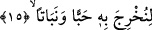
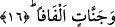

15. Size tohumlar, bitkiler yetiştirmek için.
“Size” buğday, arpa vb. insan bedenini ayakta tutacak, onun için azık olacak çokça
“tohumlar yetiştirmek için…” Aynu’l-Maâni’de belirtildiğine göre “habb/tohum”
kelimesi cins ismi olup bununla “tohumlar” şeklinde çoğul anlam kasdedilmiştir.
Râğıb Isfahânî’nin ifâdesine göre; “habb ve habbe” Arapçada buğday, arpa ve
benzeri yenilecek türden nesnelerin tohumlarına denilir. Buna karşılık “hıbb ve hıbbe”
ise fesleğen tohumlarına denilir. Şekil itibâriyle fesleğen tohumuna benzediği için
yürekte bulunan siyah noktaya “hibbetü’l-kalp” denilir.
Saman, ot ve benzeri hayvan için yem olacak bol “bitkiler yetiştirmek için…”
Bitkilerin, hayvanlar için yem olduğu bir başka âyet-i kerîmede şöyle ifâde buyruluyor:
“(O bitkilerden) hem siz yiyiniz, hem de hayvanlarınızı otlatınız” (Tâhâ, 20/54)
Normalde önce bitki sonra tohum oluştuğu halde âyette tohumlar anlamına gelen
“habben” kelimesinin, bitkiler anlamına gelen “nebâten” kelimesinden önce getirilmesi,
tohumun asli unsur olmasından ve şerefinden dolayıdır. Zira tohumun çoğu, insanların
gıda maddesini oluşturmaktadır.
Bâzıları bu âyeti; “size inciler ve otlar yetiştirmek için üstüste sıkışan bulutlardan
şarıl şarıl akan sular indirdik” şeklinde anlamışlardır. Nitekim İkrime der ki: Allah
Teâlâ gökten hiçbir damla indirmemiştir ki onunla yeryüzünde ot ya da denizde inci
meydana getirmiş olmasın.
Ancak bu görüş, meşhur olan görüşe aykırıdır. Meşhur görüşe göre inci her yağmurdan
oluşmaz. Tam tersine inci nisan yağmurundan oluşur. Yukardaki ifâde ancak “inci”
kelimesiyle bildiğimiz inci ve başka şeyleri kasdetmiş olursak o zaman doğru olabilir.
16. (Ağaçları) sarmaş dolaş olmuş bağlar bahçeler yetiştirmek için.
İnsanın zevk, lezzet alması için “(ağaçları) sarmaş dolaş olmuş bağlar, bahçeler
yetiştirmek için.” Bahçeler diye tercüme ettiğimiz kelime âyette “cennâtin” şeklinde yer
almaktadır. Tekili “cennet” kelimesidir. Cennet, aslında masdar olarak “örtmek”
kökünden gelmektedir. Cennet, hurma ve dalları birbirine sarmaş dolaş olmuş, gölge
veren ağaçlara isim olarak verilir. Ayrıca, ağaçlı toprak parçasına da “cennet” denilir.
Ferrâ der ki: Cennet, içerisinde hurma ağacı olan bahçe, firdevs ise içerisinde üzüm
bağı olan bahçe demektir. Burada “cennât” kelimesinden maksad, bahçenin toprağı değil
ağaçlarıdır.